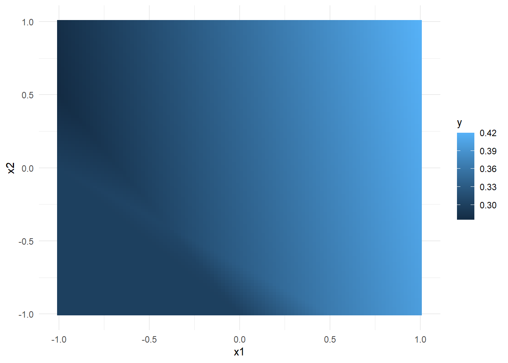
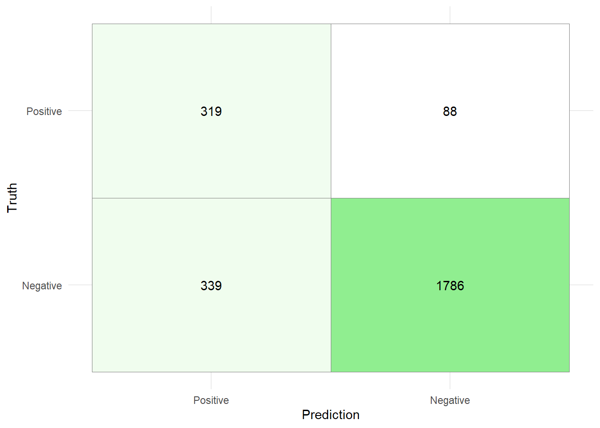

# install.packages("remotes")
remotes::install_github("rstudio/tensorflow") 9 Neural Networks
9.1 Introduction
In this exercise session, we will consider some theoretical and practical aspects of neural networks. Neural networks are by now, probably the most commonly used models in Machine Learning Research and application, as they offer a highly versatile and well-performing approach for both, classification and regression tasks. However, as we have seen when considering models like XGBoost with great performance comes great computational cost. Training neural networks not only requires a lot of data to yield satisfactory results but can also take a long time to train, depending on the number of features and samples.
Training neural networks using the {tidymodels} approach is certainly possible with the {brulee} library, but not ideal. Most machine learning libraries and neural network architectures are far more accessible in scripting languages like Python, which encompass a much wider variety of development frameworks.
9.1.1 Installing TensorFlow for R
The {tensorflow} library provides a high-level API like Keras for model development, that is easy to use and highly productive.
To to get everything working, you will need to follow the steps outlined below.
Install the
{tensorflow}package using the{remotes}package:Once the
{tensorflow}package is installed and updated, we need to make sure thatPythonis installed on our machine. The reason is, thatTensoFflowis written inC++andCUDAwithPythonbeing an interface to those languages. Since this interface has not yet been translated directly to R the most efficient approach was to create another interface that allows R code to be translated into Python without having to write a single line of Python code. To check ifPythonis already installed, you can execute the following snippet. If the snipped returns an empty character thenPythonis likely not yet installed.Sys.which("python")Pythoncan then be installed by utilizing the{reticulate}library:# install.packages("reticulate") reticulate::install_python()After installing
Pythonand the{tensorflow}R library, we need to create aPythonvirtual environment and install theTensorFlowpackage in this virtual environment. This can be done with the following snippet:library(tensorflow) install_tensorflow(envname = "r-tensorflow")An additional layer on top of
TensorFlowis provided byKeras.Kerasis aPythoninterface that communicates withTensorFlowwith the benefit of being simple, flexible, and powerful.install.packages("keras") library(keras) install_keras()
In summary, the process can be illustrated by the following diagram:

If everything was installed successfully, the following snippet should run without any issues:
library(tensorflow)
library(keras)
tf$constant("Hello TensorFlow!")tf.Tensor(b'Hello TensorFlow!', shape=(), dtype=string)
Troubleshooting
There are several common problems you can run into while trying to install Python and TensorFlow which will be listed below with a potential solution.
Installation of
{tensorflow}:remotes::install_github("rstudio/tensorflow")If the return value is
Skipping install of ‘tensorflow’ from a github remote, the SHA1 (eeb1e66b) has not changed since last install. Use
force = TRUEto force installationthen
{tensorflow}has already been installed.Installation of the
Pythonpackagetensorflow:library(tensorflow) install_tensorflow(envname = "r-tensorflow")If the return value is
Error in install_tensorflow(envname = “r-tensorflow”) : You should call install_tensorflow()/install_keras() only in a fresh R session that has not yet initialized Keras and TensorFlow (this is to avoid DLL in use errors during installation)
then restart the R under
Session -> Restart R. It is likely that thePythonpackage has already been installed, so instead of callinginstall_tensorflow(envname = "r-tensorflow")again, try the following snippet instead:library(tensorflow) tf$constant("Hello TensorFlow!")tf.Tensor(b'Hello TensorFlow!', shape=(), dtype=string)Installation of the
Pythonpackagekeras:library(keras) install_keras()If the return value is
Error in tensorflow::install_tensorflow(method = method, conda = conda, : You should call install_tensorflow()/install_keras() only in a fresh R session that has not yet initialized Keras and TensorFlow (this is to avoid DLL in use errors during installation)
then restart the R under
Session -> Restart R. It is likely that thePythonpackage has already been installed, so instead of callinginstall_keras()again, try the following snippet instead:library(tensorflow) library(keras) tf$constant("Hello TensorFlow!")tf.Tensor(b'Hello TensorFlow!', shape=(), dtype=string)
9.2 Introduction
Besides the keras and tensorflow library we will need the following as well:
library(tidyverse)
library(tidymodels)9.2.1 Estimating rent prices with feed forward neural networks
In this example, we once again, try to predict the base rent prices in Munich using the data Apartment rental offers in Germany, which is the same as in Exercise 04.
Recall that it contains roughly 850 rental listings for flats in Augsburg sourced from the online platform ImmoScout24 on three different dates in 2018 and 2019.
data_muc <- read.csv("data/rent_muc.csv")
set.seed(24)
split_rent <- initial_split(data_muc)
data_train <- training(split_rent)
data_test <- testing(split_rent)Preprocessing of the data is handled by the following recipe:
rec_rent <- recipe(
formula = baseRent ~.,
data = data_train
) %>%
update_role(scoutId, new_role = "ID") %>%
step_select(!c("serviceCharge","heatingType","picturecount",
"totalRent", "firingTypes","typeOfFlat",
"noRoomsRange", "petsAllowed",
"livingSpaceRange","regio3","heatingCosts",
"floor","date", "pricetrend")) %>%
step_mutate(
interiorQual = factor(
interiorQual,
levels = c("simple", "normal", "sophisticated", "luxury"),
ordered = TRUE
),
condition = factor(condition,
levels = c("need_of_renovation", "negotiable","well_kept",
"refurbished","first_time_use_after_refurbishment",
"modernized","fully_renovated", "mint_condition",
"first_time_use"),
ordered = TRUE),
geo_plz = factor(geo_plz),
across(where(is.logical),~as.numeric(.))) %>%
step_string2factor(all_nominal_predictors(),
all_logical_predictors()) %>%
step_ordinalscore(all_ordered_predictors())%>%
step_novel(all_factor_predictors())%>%
step_unknown(all_factor_predictors()) %>%
step_dummy(geo_plz)%>%
step_impute_knn(all_predictors()) %>%
step_filter(baseRent <= 4000,
livingSpace <= 200) %>%
step_normalize(all_predictors())Compared to the previously used recipes, we used an additional step called step_normalize(), that normalizes the specified variables. In other words, by applying the step_normalize() function, we transform the specified data such that each passed feature has a mean of zero and standard deviation of one.
After setting up the recipe, the approach of building a neural network model starts to differ from the usual {tidymodels} procedure. Since Keras and TensorFlow models are not part of the {tidymodels} framework, we have to apply the recipe to the training and test data manually and add it to the training procedure. This can be done by using the previously introduced prep and bake functions. The preprocessed datasets then need to be split into training features and training labels. When creating the training features, we need to make sure to remove the feature scoutId as it should not be used as a predictor.
data_train_nn <- rec_rent %>%
prep() %>%
bake(data_train)
train_features <- data_train_nn %>%
select(-c("scoutId", "baseRent"))
train_labels <- data_train_nn %>%
select("baseRent")
data_test_nn <- rec_rent %>%
prep() %>%
bake(data_test)
test_features <- data_test_nn %>%
select(-c("scoutId", "baseRent"))
test_labels <- data_test_nn %>%
select(c("baseRent"))Once we have successfully set up our data, we can move on to specifying our neural network architecture.
To specify a neural network architecture with two hidden layers and two dropout layers, we write a function build_model that takes the following inputs:
n_input: input dimension (number of training labels).h1: dimension of the first hidden layer.h2: dimension of the second hidden layer.n_output: output dimension.d1: dropout rate of the first hidden layer.d2: dropout rate of the second hidden layer.
Given those inputs, the function should define a sequential model with 3 dense layers (where the first layer is equipped with the tanh activation function, and the second and third layer with the "relu" activation function) and 2 dropout layers in between.
build_model <- function(n_input, h1,h2,n_output,d1,d2) {
model <- keras_model_sequential() %>%
layer_dense(h1, activation = 'tanh', input_shape = n_input) %>%
layer_dropout(rate = d1) %>%
layer_dense(h2, activation = 'relu') %>%
layer_dropout(rate = d2) %>%
layer_dense(n_output, activation = 'relu')
model
}The idea behind writing such a function is to create a simple wrapper function that allows to specify the network parameters.
We can now define a model dnn_model with the newly written function from the previous code cell by passing the following inputs:
n_input=ncol(training_features)(note, that the variable name might differ in your implementation)h1= 100h2= 50n_output = 1d1 = 0.2d2 = 0.1
Once the model is specified, compile the model using the compile function with loss specified as "mae" and optimizer "optimizer_adam", where the learning rate is equal to 0.001 and the weight decay equal to 0. By setting the additional argument metrics = 'RootMeanSquaredError', we can directly evaluate the model using the same metric as for the models we used in previous exercises.
After compiling the model, we need to train it by using the fit function. As input parameters for the fit function, use the previously defined training features and training labels. Furthermore, set the validation split to 0.175 and the number of epochs to 400. By setting the argument verbose=1, we can track the training process in the Viewer and Console pane.
set.seed(24)
tensorflow::set_random_seed(20)
dnn_model <- build_model(ncol(train_features), 256, 128, 1, 0.1, 0.1)
dnn_model <- dnn_model %>%
compile(
loss = 'mse',
optimizer = optimizer_adam(0.0005, weight_decay = 0.001),
metrics = 'RootMeanSquaredError'
)
history <- dnn_model %>% fit(
as.matrix(train_features),
as.matrix(train_labels),
validation_split = 0.175,
verbose = 1,
epochs = 385
)We can also visualize the training procedure using the {ggplot2} library:
history %>%
pluck(2) %>%
as_tibble() %>%
select(-c("loss","val_loss")) %>%
pivot_longer(cols=c("root_mean_squared_error",
"val_root_mean_squared_error"),
names_to = "set_name") %>%
ggplot(aes(x=seq(1,nrow(.)),y=value, color = set_name))+
geom_point(alpha=0.4)+
geom_line(alpha=0.4)+
scale_color_discrete(labels = c("Training","Validation"))+
labs(
color = "Set"
)+
xlab("Epoch")+
ylab("RMSE")+
ylim(0,3000)+
theme_minimal(base_size = 14)+
theme(
legend.position = "bottom"
)Note, that in the example above. No hyperparametertuning was performed. Hyperparametertuning with Keras and TensorFlow is certainly possible, (see e.g., {kerastuneR}). However, this would be beyond the scope of this exercises and will be left for the reader to explore on their own.
To evaluate the model on the test set, we can use the keras::evaluate function:
test_results <- dnn_model %>% keras::evaluate(
as.matrix(test_features),
as.matrix(test_labels)
) 35/35 - 0s - loss: 236652.1875 - root_mean_squared_error: 486.4691 - 143ms/epoch - 4ms/steptest_results loss root_mean_squared_error
236652.1875 486.4691 The test error of \(486.46\) is better than the XGBoost test error (\(543\)) we observed in Session 06.
We can now use the neural network object dnn_model_reg to explore different interpretability methods. The package that provides these methods is {iml} which stands for “interpretable machine learning”.
library(iml)Before creating a new Predictor object called mod by piping the model dnn_model_reg into the Predictor$new function with additional arguments data = train_features, y = train_labels.
data_train_nn_filtered <- data_train_nn %>%
filter(livingSpace<=quantile(livingSpace,0.95))
train_features_filtered <- data_train_nn_filtered %>%
dplyr::select(-c("scoutId", "baseRent"))
train_labels_filtered <- data_train_nn_filtered %>%
dplyr::select("baseRent")
mod <- Predictor$new(dnn_model,
data = train_features_filtered,
y = train_labels_filtered)This predictor mod will be used throughout the remaining introduction.
We can use the LocalModel$new() function to create a (linear) local surrogate model for the second observation of the training features. By using the "gower" distance, the data points passed are weighted by their proximity to the instance to be explained. The argument k sets the number of features used for the approximation.
(loc.mod <- LocalModel$new(mod,
x.interest = train_features[2, ],
dist.fun = "gower",
k = 15))Lade nötiges Paket: glmnetLade nötiges Paket: Matrix
Attache Paket: 'Matrix'Die folgenden Objekte sind maskiert von 'package:tidyr':
expand, pack, unpackLoaded glmnet 4.1-8Lade nötiges Paket: gower98/98 - 0s - 171ms/epoch - 2ms/stepWarning in gower_work(x = x, y = y, pair_x = pair_x, pair_y = pair_y, n = NULL,
: skipping variable with zero or non-finite range.
Warning in gower_work(x = x, y = y, pair_x = pair_x, pair_y = pair_y, n = NULL,
: skipping variable with zero or non-finite range.Warning in private$aggregate(): Had to choose a smaller kInterpretation method: LocalModel
Analysed predictor:
Prediction task: unknown
Analysed data:
Sampling from data.frame with 3123 rows and 100 columns.
Head of results:
beta x.recoded effect x.original
cellar -57.99440 -1.5535968 90.099908 -1.55359677657863
livingSpace 557.33055 1.3010934 725.139089 1.30109338486795
interiorQual 90.73355 1.9102113 173.320245 1.91021125554398
lift 27.32996 0.8105893 22.153371 0.810589335251954
geo_plz_X80333 10.16760 7.0237916 71.415139 7.02379161079294
geo_plz_X80469 35.07396 -0.1868135 -6.552289 -0.186813467294386
feature feature.value
cellar cellar cellar=-1.55359677657863
livingSpace livingSpace livingSpace=1.30109338486795
interiorQual interiorQual interiorQual=1.91021125554398
lift lift lift=0.810589335251954
geo_plz_X80333 geo_plz_X80333 geo_plz_X80333=7.02379161079294
geo_plz_X80469 geo_plz_X80469 geo_plz_X80469=-0.186813467294386After creating the model, we can use the plot function to visualize the model and identify the feature that has the largest effect on the outcome variable baseRent.
plot(loc.mod)+theme_minimal(base_size = 14)1/1 - 0s - 29ms/epoch - 29ms/stepAccording to the generated plot, the most influential feature for the second sample is livingSpace.
For the feature livingspace, we can create and plot feature effect plots where one plot is created using the method "ice" and the second plot created by using the method "pdp".
Recall, that for ICE (Individual Conditional Expectation) plots, we choose one individual feature \(X_j\), vary its value between \(\min(x_j)\) and \(\max(X_j)\), while keeping every other feature constant. By evaluating the model for each value, we obtain new estimates that (hopefully) show some trend with the varied feature. By repeating this procedure for every observation in the dataset, we obtain a curve for every instance that describes how the estimate behaves for varying \(X_j\) between the smallest and largest observed value.
A partial dependence plot can be obtained by considering the average of all curves for one feature.
library(patchwork)
# ICE
p1_fe <- FeatureEffect$new(mod,
feature = "livingSpace",
method = "ice")$plot()
#Partial dependence plot
p2_fe <- FeatureEffect$new(mod,
feature = "livingSpace",
method = "pdp")$plot()(p1_fe|p2_fe) +
plot_layout(
axes = "collect"
)&
theme_minimal(base_size = 14)The ICE plot shows that for almost all observations, an increase in livingSpace corresponds to an increase in estimated base rent. The PDP plot shows, that on average, this is true as well.
To check if there are any observations that defeat this trend, we can analyse the points generated by the FeatureEffect function.
df_ice_filtered <- p1_fe$data %>%
group_by(.id) %>%
filter(livingSpace == min(livingSpace) |
livingSpace == max(livingSpace)) %>%
pivot_wider(names_from = livingSpace, values_from = .value) %>%
rename(min_rent = 3,
max_rent = 4)
df_ice_filtered %>% glimpse()Rows: 3,123
Columns: 4
Groups: .id [3,123]
$ .type <chr> "ice", "ice", "ice", "ice", "ice", "ice", "ice", "ice", "ice"…
$ .id <int> 1, 2, 3, 4, 5, 6, 7, 8, 9, 10, 11, 12, 13, 14, 15, 16, 17, 18…
$ min_rent <dbl> 442.1158, 1329.9663, 439.5775, 522.1421, 297.3833, 458.4910, …
$ max_rent <dbl> 3068.9495, 6094.7588, 3161.6467, 3252.5591, 2675.5125, 2207.1…First, we group the points by the .id column which represents the index of the samples. Since not only the smallest and largest living space is used to predict a new base rent, we filter every value between. By using the pivot_wider function in line 5, we create a wider data set with two new columns displaying the base rent estimated for the smallest and largest living space respectively. Since the newly created columns have messy names (these are the normalized values for the smallest and largest living space), we change them to min_rent and max_rent.
This newly created dataset can then be used to check for any abnormalities:
To check whether there are any listings where the base rent decreases with increasing living space, the following snippet provides an answer:
df_ice_filtered %>%
filter(min_rent-max_rent >=0)# A tibble: 1 × 4
# Groups: .id [1]
.type .id min_rent max_rent
<chr> <int> <dbl> <dbl>
1 ice 2618 2067. 1929.Surprisingly there is one listing where an increase in living space yields a decreasing base Rent! Using the following snippet, we can visualize our finding:
p1_fe$data %>%
filter(.id!=2618) %>%
ggplot(aes(x=livingSpace,y=.value, group = .id))+
geom_line(color="gray60")+
geom_line(data=(filter(p1_fe$data,.id==2618)),
aes(x=livingSpace,y=.value),
color = "red",
linewidth=1.5)+
theme_minimal(base_size = 12)At this point, further analysis could be conducted to find out why that is the case. However, this is beyond the scope of this exercise.
9.3 Exercises
9.3.1 Theoretical Exercises
The notation used for the following exercise will be somewhat different from the notation in the lecture. However, I will try to explain every notational aspect as clearly as possible.
Consider the neural network depicted below.

Here,
\((x_1, x_2)^\top\in \mathbb{R}^2\) denotes an input vector
\(\{h_i^{(1)}\}_{i=1}^3\) denote a hidden layer with each neuron defined by \[ h_i^{(1)} := \sigma_1\left(\sum_{j=1}^{2}w_{ij}^{(1)} x_j + b_1\right)\] where \(\sigma_1:\mathbb{R}\to\mathbb{R}\) denotes an activation function, \(w_{i1}^{(1)},w_{i2}^{(1)}, b_1\in\mathbb{R},i=1,...,3\) denote weights and a bias for the first layer.
\(y_1\) is the output of the neural network that is defined as \[ y_1 = \sigma_2\left(\sum_{i=1}^{3}w_{i1}^{(2)}h_i^{(1)}+b_2\right), \tag{9.1}\]
where \(\sigma_2:\mathbb{R}\to\mathbb{R}\) denotes another activation function, and \(w_{i1}^{(2)}, b_2\in\mathbb{R},i=1,...,3\) denote weights and a bias for the second/final layer.
Exercise 9.1 Assume that \(\sigma_1 = \sigma_2 = \mathrm{ReLU}\), i.e., \(x\mapsto \max\{0,x\}\). Set up the model equation for this neural network by expanding the term \(y_1\).
Exercise 9.2 In this exercise, we want to implement and visualize the neural network of Exercise 9.1.
Write a function
nnthat represents the neural network of the previous exercise. It should take a vector \(x\in\mathbb{R}^2\), a weight matrix \(w_1\in\mathbb{R}^{3\times 2}\) used to calculate \(h_i^{(1)}\), a weight vector \(w_2\in\mathbb{R}^3\) used to calculate the term \(\sum_{i=1}^{3}w_{i1}^{(2)}h_i^{(1)}\) and two bias terms \(b_1,b_2\in\mathbb{R}\) as an input. The return value should be the output of the neural network we used in the previous exercises.Given the following weights, biases, and input matrix
x, calculate the return value and plot the results using thegeom_tile()function where the return value of thennfunction is set to be the fill parameter.TipYou will have to use the
lapplyfunction to be able to apply the input matrixxto the functionnn.
Exercise 9.3 We can generalize the neural network above in a way that the hidden layer has \(n\in\mathbb{N}\) instead of \(3\) neurons. Modify Equation 9.1, such that the hidden layer now has \(n\in\mathbb{N}\) neurons! What are the benefits and drawbacks of adding additional neurons? Name one each.
Exercise 9.4 Explain in your own words the difference between global interpretability models and local interpretability models.
Exercise 9.5 Explain in your own words the meaning of “post-hoc” interpretation mehtods.
Post-hoc intepretation refers to the process of interpreting the model’s behavior subsequent to model training. The goal is to make use of the predifined structure of the model without modifying the training process itself.
Exercise 9.6 Explain in your own words the difference between individual conditional expectation (ICE) for a feature and partial dependence on a feature.
9.3.2 Neural Networks for Classification
The dataset for this exercise will be the Credit Card Customers data set that we already used in previous exercises. You can either download it again using the provided link or the button below.
Recall that the data set consists of 10,127 entries that represent individual customers of a bank including but not limited to their age, salary, credit card limit, and credit card category.
The goal is to find out whether a customer will stay or leave the bank given the above features.
The following training, validation and test split should be used for training the models of the subsequent exercises.
credit_info <- read.csv("data/BankChurners.csv")
credit_info <- credit_info %>%
mutate(
Attrition_Flag = if_else(Attrition_Flag=="Attrited Customer",
1,
0)
)
set.seed(121)
split <- initial_split(credit_info, strata = Attrition_Flag)
data_train_ci <- training(split)
data_test_ci <- testing(split)Preprocessing of the data is handled by the following recipe.
levels_income <- c("Less than $40K","$40K - $60K",
"$60K - $80K","$80K - $120K","$120K +")
levels_education <- c("Uneducated", "High School","College",
"Graduate", "Post-Graduate", "Doctorate")
rec_ci <- recipe(Attrition_Flag ~., data = data_train_ci) %>%
update_role(CLIENTNUM, new_role = "ID") %>%
step_mutate_at(all_nominal_predictors(),
fn = ~if_else(.%in% c("Unknown","unknown"),NA,.)
)%>%
step_string2factor(Income_Category,
levels = levels_income,
ordered = TRUE) %>%
step_string2factor(Education_Level,
levels = levels_education,
ordered = TRUE) %>%
step_ordinalscore(all_ordered_predictors()) %>%
step_unknown(all_factor_predictors()) %>%
step_impute_knn(all_predictors()) %>%
step_dummy(all_nominal_predictors()) %>%
step_zv(all_predictors()) %>%
step_corr(all_predictors()) %>%
step_normalize(all_predictors())Exercise 9.7 Given the recipe and data split, create the training and testing features and labels that will later be used for training a neural network.
Exercise 9.8 For this exercise set the internal R seed to 24 and tensorflow::set_random_seed(2) to obtain reproducible results.
Write a function
build_modelwith argumentsn_input, h1,h2,n_output,d1,d2, wheren_inputdenotes the dimension of the input,h_i\(i=1,2\) denotes the dimensions of two hidden layers,n_outputdenotes the dimension of the output, andd_i\(i=1,2\) denotes the dropout rate of the two hidden layers.
Given these inputs, the function should create a Keras sequential model consisting of three dense layers with two dropout layers in between having a dropout rate of
d1andd2respectively. The first and second dense layer should be equipped with the'relu'activation function and the last layer with the sigmoid activation function. The functionbuild_modelshould then return the specified model.Create an instance of a keras sequential model using the function described with arguments
n_input = ncol(train_features),h_1 = 30, h_2 = 4,n_output = 1, andd_1 = 0.2, d_2 = 0.
Compile the model with
lossset tobinary_crossentropy,optimizerset tooptimizer_adam(5e-4, weight_decay = 1e-6)andmetrics= 'Accuracy'. Then, train the model using a validation split size of \(10\%\) and \(100\) epochs using thefit()function.Finally, evaluate the model on the test data.
Exercise 9.9 Use the following Code snippet to generate predictions for the test data and construct a confusion matrix based on the predictions. Then, calculate the sensitivity, precision and accuracy for the model.
test_pred <- dnn_model %>%
predict(
as.matrix(test_features)
) %>%
as_tibble() %>%
mutate(
pred_class = if_else(V1>0.5,"Positive","Negative") %>% factor(),
truth = if_else(test_labels == 1,"Positive","Negative") %>% factor()
)9.4 Solutions
Solution 9.1 (Exercise 9.1). \[\begin{align*} y_1 &= &&\sigma_2\left(\sum_{i=1}^{3}w_{i1}^{(2)}h_i^{(1)}+b_2\right)\\ &= &&\max\left\{\sum_{i=1}^{3}w_{i1}^{(2)}h_i^{(1)}+b_2,0\right\}\\ &= &&\max\left\{\sum_{i=1}^{3}w_{i1}^{(2)}\sigma_1\left(\sum_{j=1}^{2}w_{ij}^{(1)} x_j + b_1\right)+b_2,0\right\}\\ &= &&\max\left\{\sum_{i=1}^{3}w_{i1}^{(2)}\max\left\{\sum_{j=1}^{2}w_{ij}^{(1)} x_j + b_1,0\right\}+b_2,0\right\}\\ &=&&\max\left\{\sum_{i=1}^{3}w_{i1}^{(2)}\max\left\{w_{i1}^{(1)} x_1 + w_{i2}^{(1)} x_2 + b_1,0\right\}+b_2,0\right\} \\ &=&&\max\left\{\right.\\ & && w_{11}^{(2)}\max\left\{w_{11}^{(1)} x_1 + w_{12}^{(1)} x_2 + b_1,0\right\} + \\ & && w_{21}^{(2)}\max\left\{w_{21}^{(1)} x_1 + w_{22}^{(1)} x_2 + b_1,0\right\} + \\ & && w_{31}^{(2)}\max\left\{w_{31}^{(1)} x_1 + w_{32}^{(1)} x_2 + b_1,0\right\} + \\ & && \left. b_2,0\right\} \end{align*}\]
Solution 9.2 (Exercise 9.2).
-
nn <- function(x, w1, w2, b1, b2){ h = pmax(w1%*%x+b1,0) y = pmax(w2%*%h+b2,0) return(y[1]) } -
w1 <- matrix(c(0.2,0.2,0.3,0.3,0.2,0.2), ncol = 2) w2 <- matrix(c(-0.3,0.2,0.3), nrow = 1) b1 <- 0.2 b2 <- 0.3 x1 <- seq(-1,1,length.out = 100) x2 <- seq(-1,1,length.out = 100) x <- expand.grid(x1,x2) %>% as.matrix()y <- apply(x, 1, function(row) nn(row, w1, w2, b1, b2)) cbind(x, y) %>% as_tibble() %>% set_names(c("x1","x2","y")) %>% ggplot(aes(x=x1,y=x2,fill = y)) + geom_tile() + theme_minimal()
Solution 9.3 (Exercise 9.3). \[ y_1 = \sigma_2\left(\sum_{i=1}^{n}w_{i1}^{(2)}h_i^{(1)}+b_2\right) \]
Advantage The model is more flexible and can therefore better estimate the training data.
Disadvantage: The model is prone to over fitting.
Solution 9.4 (Exercise 9.4).
The goal of local interpretability is to explain the model’s behavior for a specific input, or a single observation in general.
The goal of global interpretability models is to explain the model’s behavior on the whole input data.
Solution 9.5 (Exercise 9.5). Post-hoc intepretation refers to the process of interpreting the model’s behavior subsequent to model training. The goal is to make use of the predifined structure of the model without modifying the training process itself.
Solution 9.6 (Exercise 9.6). ICE is used to model the relationship between a single input feature and the model’s predictions. Partial dependence is a modification of ICE, as it simply takes the average of ICE over the whole sample.
Solution 9.7 (Exercise 9.7).
data_train_nn <- rec_ci %>%
prep() %>%
bake(data_train_ci)
train_features <- data_train_nn %>%
select(-c(CLIENTNUM,Attrition_Flag))
train_labels <- data_train_nn %>%
select(Attrition_Flag)
data_test_nn <- rec_ci %>%
prep() %>%
bake(data_test_ci)
test_features <- data_test_nn %>%
select(-c(CLIENTNUM,Attrition_Flag))
test_labels <- data_test_nn %>%
select(Attrition_Flag)Solution 9.8 (Exercise 9.8).
build_model <- function(n_input, h1,h2,n_output,d1,d2) {
model <- keras_model_sequential() %>%
layer_dense(h1, activation = 'relu', input_shape = n_input) %>%
layer_dropout(rate = d1) %>%
layer_dense(h2, activation = 'relu') %>%
layer_dropout(rate = d2) %>%
layer_dense(n_output, activation = 'sigmoid')
model
}set.seed(24)
tensorflow::set_random_seed(2)
dnn_model <- build_model(ncol(train_features), 30, 4, 1, 0.2, 0)
dnn_model <- dnn_model %>%
compile(
loss = 'binary_crossentropy',
optimizer = optimizer_adam(5e-4, weight_decay = 1e-6),
metrics='Accuracy'
)
history <- dnn_model %>% fit(
as.matrix(train_features),
as.matrix(train_labels),
validation_split = 0.1,
verbose = 1,
epochs = 100
)test_results <- dnn_model %>% keras::evaluate(
as.matrix(test_features),
as.matrix(test_labels)
) 80/80 - 0s - loss: 0.7566 - Accuracy: 0.9021 - 99ms/epoch - 1ms/steptest_results loss Accuracy
0.7566464 0.9020537 Solution 9.9 (Exercise 9.9).
test_pred <- dnn_model %>%
predict(
as.matrix(test_features)
) %>%
as_tibble() %>%
mutate(
pred_class = if_else(V1>0.5,"Positive","Negative") %>% factor(),
truth = if_else(test_labels == 1,"Positive","Negative") %>% factor()
)80/80 - 0s - 123ms/epoch - 2ms/stepcm_nn <- test_pred %>% conf_mat(estimate = pred_class,truth=truth)
table(test_pred$pred_class,test_pred$truth)
Negative Positive
Negative 2111 234
Positive 14 173cm_tib <- as_tibble(cm_nn$table)%>%
mutate(
Prediction = factor(Prediction,
levels = rev(levels(factor(Prediction)))),
Truth = factor(Truth)
)
cm_tib %>% ggplot(aes(x = Prediction, y = Truth,fill = n)) +
geom_tile( colour = "gray50")+
geom_text(aes(label = n))+
scale_fill_gradient(low = "white", high = "#9AEBA3")+
theme_minimal()+
theme(legend.position = "none")The metrics are then given by
\[\begin{align*} \mathrm{Accuracy} &= \frac{173+2111}{173+2111+14+234} = 0.902\\ \mathrm{Recall} &= \frac{173}{173+234}=0.4250\\ \mathrm{Precision} &= \frac{173}{173+14}=0.925 \end{align*}\]
While the accuracy and precision of the model are relatively high, these metrics should be chosen carefully when the data set is unbalanced. Especially the precision is worrisome, since the model only correctly identifies roughly \(42\%\) of the customers that might want to leave the bank.
Another aspect we have not considered: The classification threshold is set to \(0.5\), which might not be optimal. Consider the following ROC curve was produced by the DNN model.
test_pred %>%
roc_curve(truth = truth,V1) %>%
ggplot(aes(x=1-specificity,y=sensitivity))+
geom_line(linewidth=1.5)+
coord_equal()+
theme_minimal(base_size=12)The optimal threshold value with respect to the ROC curve is the value that maximizes both, the sensitivity and specificity of the model. In simpler terms, the optimal threshold value is the one closest to the top left corner. To find this value, we can simply calculate the euclidean distance of all the points on the ROC curve to the top left corner and select the threshold of the one with minimal distance to the top left corner.
test_pred %>%
roc_curve(truth = truth,V1) %>%
mutate(
dist = sqrt((1-specificity)^2+(sensitivity-1)^2)
) %>%
filter(dist == min(dist))# A tibble: 1 × 4
.threshold specificity sensitivity dist
<dbl> <dbl> <dbl> <dbl>
1 0.997 0.784 0.841 0.268To visualize the point on the ROC curve that corresponds to the optimal threshold, consider the following code snippet:
test_pred %>%
roc_curve(truth = truth,V1) %>%
ggplot(aes(x=1-specificity,y=sensitivity))+
geom_line(linewidth=1.5, color = "gray60")+
geom_point(data = tibble(x=1-0.784,y=0.841), aes(x=x,y=y), color = "red", size = 3)+
coord_equal()+
theme_minimal(base_size=12)Using this threshold produces the following confusion matrix:
80/80 - 0s - 83ms/epoch - 1ms/step
While the accuracy of the model with the new threshold is lower (\(90.2\%\) vs. \(83.1\%\)), the new model identifies people who are at risk of leaving the bank a lot better.
9.5 Session Info
sessionInfo()R version 4.2.3 (2023-03-15 ucrt)
Platform: x86_64-w64-mingw32/x64 (64-bit)
Running under: Windows 10 x64 (build 22631)
Matrix products: default
locale:
[1] LC_COLLATE=German_Germany.utf8 LC_CTYPE=German_Germany.utf8
[3] LC_MONETARY=German_Germany.utf8 LC_NUMERIC=C
[5] LC_TIME=German_Germany.utf8
attached base packages:
[1] stats graphics grDevices utils datasets methods base
other attached packages:
[1] patchwork_1.3.0 gower_1.0.1 glmnet_4.1-8 Matrix_1.6-0
[5] iml_0.11.3 yardstick_1.3.1 workflowsets_1.1.0 workflows_1.1.4
[9] tune_1.2.1 rsample_1.2.1 recipes_1.1.0 parsnip_1.2.1
[13] modeldata_1.4.0 infer_1.0.7 dials_1.3.0 scales_1.3.0
[17] broom_1.0.7 tidymodels_1.2.0 lubridate_1.9.3 forcats_1.0.0
[21] stringr_1.5.1 dplyr_1.1.4 purrr_1.0.2 readr_2.1.5
[25] tidyr_1.3.1 tibble_3.2.1 ggplot2_3.5.1 tidyverse_2.0.0
[29] keras_2.15.0 tensorflow_2.16.0
loaded via a namespace (and not attached):
[1] colorspace_2.1-0 class_7.3-22 rprojroot_2.0.4
[4] base64enc_0.1-3 rstudioapi_0.17.1 listenv_0.9.1
[7] furrr_0.3.1 farver_2.1.1 prodlim_2023.08.28
[10] fansi_1.0.4 codetools_0.2-20 splines_4.2.3
[13] knitr_1.43 zeallot_0.1.0 jsonlite_1.8.8
[16] Metrics_0.1.4 png_0.1-8 tfruns_1.5.3
[19] compiler_4.2.3 backports_1.4.1 fastmap_1.1.1
[22] cli_3.6.2 htmltools_0.5.8.1 tools_4.2.3
[25] gtable_0.3.5 glue_1.6.2 Rcpp_1.0.12
[28] DiceDesign_1.10 vctrs_0.6.5 iterators_1.0.14
[31] timeDate_4041.110 xfun_0.43 globals_0.16.3
[34] timechange_0.3.0 lifecycle_1.0.4 future_1.33.0
[37] MASS_7.3-58.2 ipred_0.9-14 hms_1.1.3
[40] parallel_4.2.3 yaml_2.3.8 reticulate_1.36.1
[43] rpart_4.1.23 stringi_1.8.3 foreach_1.5.2
[46] checkmate_2.3.1 lhs_1.1.6 hardhat_1.4.0
[49] lava_1.8.0 shape_1.4.6.1 rlang_1.1.3
[52] pkgconfig_2.0.3 evaluate_1.0.1 lattice_0.22-6
[55] htmlwidgets_1.6.4 labeling_0.4.3 tidyselect_1.2.1
[58] here_1.0.1 parallelly_1.37.1 magrittr_2.0.3
[61] R6_2.5.1 generics_0.1.3 pillar_1.9.0
[64] whisker_0.4.1 withr_3.0.2 survival_3.6-4
[67] nnet_7.3-19 future.apply_1.11.2 utf8_1.2.3
[70] tzdb_0.4.0 rmarkdown_2.28 grid_4.2.3
[73] data.table_1.15.4 digest_0.6.35 munsell_0.5.1
[76] GPfit_1.0-8